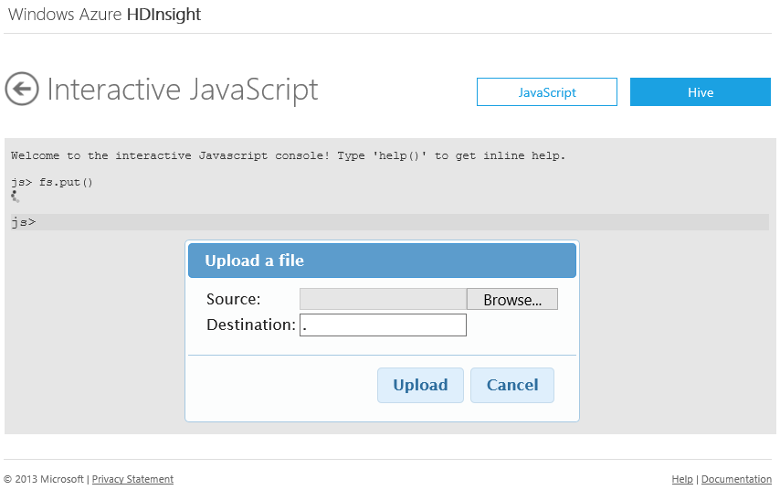

How to Upload Data to HDInsight
Windows Azure HDInsight Service provides two options in how it manages its data, Azure Storage Vault (ASV) and Hadoop Distributed File System (HDFS). HDFS is designed to store data used by Hadoop applications. Data stored in Windows Azure Blob Storage can be accessed by Hadoop applications using Windows Azure Storage Vault (ASV), which provides a full featured HDFS file system over Windows Azure Blob storage. It has been designed as an HDFS extension to provide a seamless experience to customers by enabling the full set of components in the Hadoop ecosystem to operate directly on the data it manages. Both options are distinct file systems that are optimized for storage of data and computations on that data.
Windows Azure HDInsight clusters are typically deployed to execute MapReduce jobs and are dropped once these jobs have been completed. Keeping the data in the HDFS clusters after computations have been completed would be an expensive way to store this data. Windows Azure Blob storage is a highly available, highly scalable, high capacity, low cost, and shareable storage option for data that is to be processed using HDInsight. Storing data in a Blob enables the HDInsight clusters used for computation to be safely released without losing data.
Windows Azure Blob storage can either be accessed through the API programmatically or through explorer tools. Here are some of the tools available:
Table of Contents
How to: Upload data to Windows Azure Storage using Azure Storage Explorer
Azure Storage Explorer is a useful tool for inspecting and altering the data in your Windows Azure Storage. It is a free tool that can be downloaded from http://azurestorageexplorer.codeplex.com/.
Before using the tool, you must know your Windows Azure storage account name and account key. For the instructions for get the information, see the How to: View, copy and regenerate storage access keys section of How to Manage Storage Accounts.
Run Azure Storage Explorer.

Click Add Account. After an account is added to Azure Storage Explorer, you don't need to go through this step again.

Enter Storage account name and Storage account key, and then click Add Storage Account. You can add multiple storage accounts, each account will be displayed on a tab.
From Storage Type, click Blobs to display the Windows Azure Blob storage of the account.

From Container, click the container that is associated to your HDInsight cluster. When you create an HDInsight cluster, you must specify a container. Otherwise, the cluster creation process creates one for you.
- From Blob, click Upload.
- Specify a file to upload, and then click Open.
Blob storage containers store data as key/value pairs, and there is no directory hierarchy. However the ‘/’ character can be used within the key name to make it appear as if a file is stored within a directory structure. For example, a blob’s key may be ‘input/log1.txt’. No actual ‘input’ directory exists, but due to the presence of the ‘/’ character in the key name, it has the appearance of a file path. You can click Rename to give a file a folder structure.
How to: Access Data Stored in Windows Azure Blob Storage
Data stored in Windows Azure Blob Storage can be accessed directly from the Interactive JavaScript Console by prefixing the protocol scheme of the URI for the assets you are accessing with asv://. To secure the connection, use asvs://. The scheme for accessing data in Windows Azure Blob Storage is:
asv[s]://[<container>@]<accountname>.blob.core.windows.net/<path>
The following is an example of viewing data stored in Windows Azure Blob Storage using the Interactive JavaScript Console:

The following will run a Hadoop streaming job that uses Windows Azure Blob Storage for both input and output:
Hadoop jar hadoop-streaming.jar
-files "hdfs:///example/apps/map.exe, hdfs:///example/apps/reduce.exe"
-input "asvs://container@storageaccount.blob.core.windows.net/iislogsinput/iislogs.txt"
-output "asvs://container@storageaccount.blob.core.windows.net/iislogsoutput/results.txt"
-mapper "map.exe"
-reducer "reduce.exe"
For more information, see Using Windows Azure Blob Storage with HDInsight.
How to: Upload Data to HDFS using Interactive JavaScript Console
Windows Azure HDInsight Service comes with a web based interactive JavaScript console that can be used as an administration/deployment tool.
- Sign in to the Management Portal.
- Click HDINSIGHT. You will see a list of deployed Hadoop clusters.
- Click the Hadoop cluster where you want to upload data to.
- From the HDInsight Dashboard, click the cluster URL.
- Enter User name and Password for the cluster, and then click Log On.
Click Interactive Console.

From the Interactive JavaScript console, type the following command:
fs.put()
Press ENTER.

Enter Source and Destination, and then click Upload. In the Destination field, you can use "/" for the root "folder" of the default file system; you can also use the asv[s]:// syntax.
Use the following command to list the uploaded files.
#ls <path>
How to: Upload Data to HDFS Using Hadoop Command Line
To use Hadoop command line, you must first connect to the cluster using remote desktop.
- Sign in to the Management Portal.
- Click HDINSIGHT. You will see a list of deployed Hadoop clusters.
- Click the Hadoop cluster where you want to upload data to.
- Click the cluster URL, or Start Dashboard on the bottom of the page
- Enter User name and Password for the cluster, and then click Log On.
Click Remote Desktop.

Click Open.
- Enter your credentials, and then click OK.
- Click Yes.
- From the desktop, click Hadoop Command Line.
The following sample demonstrates how to copy the davinci.txt file from the C:\temp\ directory to the /example/data directory.
hadoop dfs -copyFromLocal C:\temp\davinci.txt /example/data/davinci.txt
Use the following command to list the uploaded files:
hadoop dfs -lsr /example/data
How to: Import Data to HDFS from SQL Database/SQL Server Using Sqoop
Sqoop is a tool designed to transfer data between Hadoop and relational databases. You can use it to import data from a relational database management system (RDBMS) such as SQL or MySQL or Oracle into the Hadoop Distributed File System (HDFS), transform the data in Hadoop with MapReduce or Hive, and then export the data back into a RDBMS. For more information, see Sqoop User Guide.
Before importing data, you must know the Windows Azure SQL Database server name, database account name, account password and database name. You must also configure a firewall rule for the database server to allow connections from your HDInsight cluster head node. For instruction on creating SQL database and configuring firewall rules, see How to use Windows Azure SQL Database in .NET applications. To obtain the outward facing IP Address for your HDInsight cluster head node, you can use Remote Desktop to connect to the head node, and then browse to www.whatismyip.com.
- Sign in to the Management Portal.
- Click HDINSIGHT. You will see a list of deployed Hadoop clusters.
- Click the Hadoop cluster where you want to upload data.
- Click Connect on the bottom of the page.
- Click Open.
- Enter your credentials, and then click OK.
- Click Yes.
- From the desktop, click Hadoop Command Line.
- Change directory to c:\apps\dist\sqoop-1.4.2\bin. Please note, the Sqoop version number could change in the future.
Run a command similar to the following:
sqoop import
--connect "jdbc:sqlserver://s6ok0p9kft.database.windows.net;username=user1@s6ok0p9kft;password=Pass@word1;database=AdventureWorks2012"
--table Sales.SalesOrderDetail
--columns "SalesOrderID,SalesOrderDetailID,CarrierTrackingNumber,OrderQty,ProductID,SpecialOfferID,UnitPrice,UnitPriceDiscount,LineTotal"
--target-dir /data/lineitemData
-m 1
In the command, the SQL database server is s6ok0p9kft, username is user1, password is Pass@word1, and the database is AdventureWorks2012.
You can run the #tail command from the Interactive Console to see the result:
#tail /data/lineitemData/part-m-00000
Note: When specifying an escape character as delimiter with the arguments --input-fields-terminated-by and --input-fields-terminated-by, do not put quotes around the escape character. For example.
sqoop export
--connect "jdbc:sqlserver://localhost;username=sa;password=abc;database=AdventureWorks2012"
--table Result
--export-dir /hive/warehouse/result
--input-fields-terminated-by \t
--input-lines-terminated-by \n
Next Steps
Now that you understand how to get data into HDInsight Service, use the following tutorials to learn how to perform analysis: